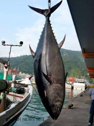

鮪魚（「鮪」，拼音：w?i，注音：ㄨㄟˇ，粵拼：fui2，英語：tuna, tunny），又稱金槍魚、吞拿魚，是一種海水魚類，屬於鯖科下面的金槍魚族（學名：Thunnini）。本族包含5屬15種鮪魚[2]，各物種之間大小變化很大，最小的鮪魚是圓舵鰹，其最大長度為50 cm（1.6英尺），重量為1.8公斤（4磅）；最大的鮪魚則是北方藍鰭金槍魚，其最大長度為4.6公尺（15英尺），重量為684公斤（1,508磅），平均長度為2公尺（6.6英尺），據信其壽命可以長達50歲。 鮪魚、月魚屬以及鼠鯊目是目前僅存可將體溫維持在比周圍水體溫度高的物種。鮪魚是一種活躍而敏捷的食肉動物，該物種擁有光滑的流線型身體，也是游動速度最快的遠洋魚類之一；舉例，黃鰭金槍魚的游動速度可達75 km/h（47 mph）[3]。鮪魚可在溫暖海域發現，成為一種大量商業捕撈的魚類，並且也是釣魚活動當中的一種受歡迎魚類。由於人類的過度捕撈，藍鰭金槍魚等部分鮪魚物種已接近滅絕危機[4]。

連到首頁
連到地2頁
連到第4頁